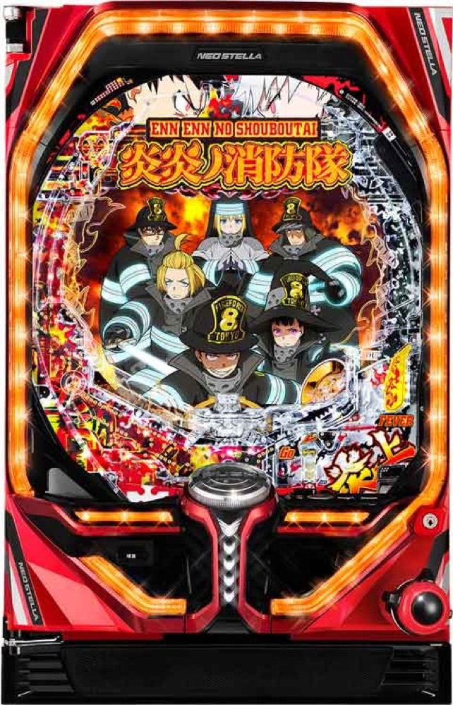

Pフィーバー炎炎ノ消防隊
約1/319.7から炎上モードを突破し、トータル継続約81%へ。
- 導入
- 2023年4月
- メーカー
- SANKYO
- 分類
- パチンコ
主要スペック
初当り後はBATTLE BONUSと炎上モードを経由して炎炎激闘を目指す、二段階突破型のミドル機です。初当り約1/319.7、初回RUSH突入約51%、トータル継続約81%を固定条件で簡易体験できます。
- 大当り約1/319.7
- 初回BATTLE BONUS突入約51%
- 炎炎激闘トータル継続約81%
Pフィーバー炎炎ノ消防隊の見どころと計算条件
初当り後はBATTLE BONUSと炎上モードを経由して炎炎激闘を目指す、二段階突破型のミドル機です。初当り約1/319.7、初回RUSH突入約51%、トータル継続約81%を固定条件で簡易体験できます。
P炎炎ノ消防隊を数字で早分かり
結果では表記出玉と実獲得出玉を分け、250玉貸し・28玉交換の固定条件で差玉と収支を計算します。
30秒で分かるP炎炎ノ消防隊
1500個を重ねながら、約1/2の短い当落をテンポよく楽しみたい人向けです。
こんな遊び方に向いている
- 二段階突破の緊張感を楽しみたい
- 右打ちALL1500個を重視したい
遊ぶ前に確認したいこと
- 初回RUSH突入は約51%
- 炎上モードは約50%で炎炎激闘へ
BATTLE BONUSから炎炎激闘へ
通常時の大当りは約1/319.7。初当りの約51%でBATTLE BONUSへ進み、継続抽選を重ねます。
炎上モードに移行した場合は約50%で炎炎激闘へ。サイトでは初回ルートを約51%のRUSH突入抽選へまとめ、右打ち全体をトータル継続約81%で簡易抽選します。
右打ちはALL約1500個
右打ち中の大当りはALL約1500個で、約30%は次回大当りも含めて約3000個を獲得する超炎上FEVERです。
シミュレーターでは1500個70%・3000個30%の代表振り分けに整理し、複数の内部状態は個別再現しません。
固定条件と遊び方
- 18.0回/1,000円・250玉貸し・28玉交換で固定
- 平均初当り投資目安は約17,800円
- 当り中はPUSH後にラウンドと実獲得出玉を表示
- 結果は自動でマイ記録へ保存
平均回転と投資目安の計算
通常時の初当り確率は約1/319.7です。当サイトでは、1,000円あたり18回転という機種別の固定条件を使い、平均投資目安を「319.7 ÷ 18 × 1,000円」で計算します。この条件では約17,800円が平均投資の目安です。
通常スタート、250玉貸し・28玉交換で固定し、炎炎激闘突入率51%と継続率81%を簡易抽選します。表記出玉とは別に、打ち出しとオーバー入賞を簡易反映した実獲得出玉を収支へ使用します。平均値は長期間の理論上の目安であり、1回ごとの結果や実際の遊技収支を保証するものではありません。
シミュレーション結果の見方
当るまで初当りまでの回転数と投資目安
RUSH炎炎激闘への突入と連チャン回数
出玉表記出玉と、打ち出しを反映した実獲得出玉
最終収支実獲得出玉を28玉交換で換算した収支目安
結果は自動で「マイ記録」に保存され、同じ機種を何回試したか、最高収支、勝率をあとから確認できます。
簡易シミュレーターについて
初当り・炎炎激闘・出玉の流れを固定条件で体験できます。JavaScriptを有効にすると、この位置にシミュレーター、演出、マイ記録、機種別ランキングが表示されます。
結果は娯楽・確率理解のための参考表示です。金銭的価値や交換価値はなく、実際の勝敗や収支を保証しません。18歳未満の方の利用はお控えください。
P炎炎ノ消防隊のよくある質問
P炎炎ノ消防隊はどんな台？
初当り後はBATTLE BONUSと炎上モードを経由して炎炎激闘を目指す、二段階突破型のミドル機です。 大当り約1/319.7が主な確認ポイントです。
P炎炎ノ消防隊の平均投資目安は？
当サイトの固定条件では1,000円あたり18回転として、平均17,800円が目安です。実店舗の回転率や持ち玉状況で変わるため、実収支を保証する値ではありません。
シミュレーターでは何を体験できる？
初当りまでの回転数、炎炎激闘への突入、連チャンと出玉を固定条件で簡易抽選します。実機の全演出や内部状態を完全再現するものではありません。
出玉と収支はどう計算する？
スペック上の表記出玉とは別に、打ち出しロスとオーバー入賞を簡易反映した実獲得出玉を算出します。250玉貸し・28玉交換の固定条件で差玉と収支目安を表示します。